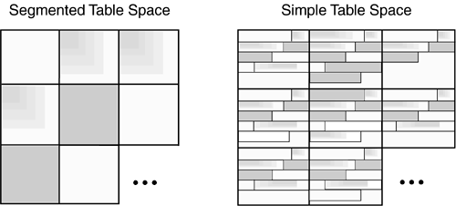
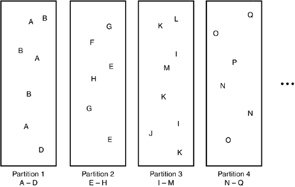
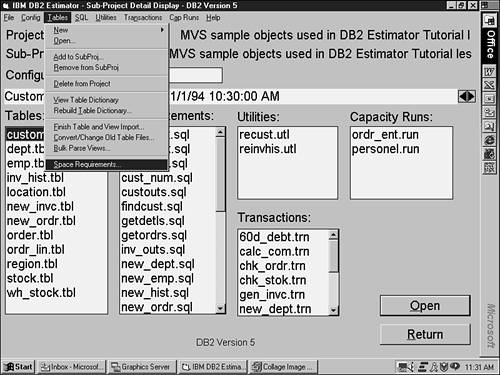
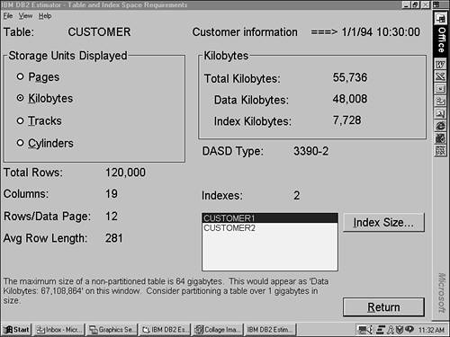

|
|
< Day Day Up > |
|
Creating and Using DB2 Table SpacesAlthough DB2 data is accessed at the table level, the data itself is actually stored in a structure known as a table space. Each table space correlates to one or more individual physical VSAM linear data sets that are used to house the actual DB2 data. Before any data can be physically stored in a DB2 database, a table space must first be created. If you attempt to create a table without specifying a table space, DB2 will create a default table space (unless you do not have authority to use the default database). Types of Table SpacesWhen designing DB2 databases, DBAs can choose from four types of table spaces, each one useful in different circumstances. The four types of table spaces are:
Simple Table SpacesSimple table spaces are found mostly in older DB2 applications. A simple table space can contain one or more tables. When multiple tables are defined to a simple table space, a single page can contain rows from all the tables defined to the table space. Prior to DB2 V2.1, most DB2 table spaces were defined as simple table spaces because the only other option was a partitioned table space. However, most subsequent applications use segmented table spaces because of their enhanced performance and improved methods of handling multiple tables. If an application must read rows from multiple tables in a predefined sequence, however, mixing the rows of these tables together in a single simple table space can prove to be beneficial. The rows should be mixed together on the page in a way that clusters the keys by which the rows will be accessed. This can be done by inserting the rows using a "round robin" approach, switching from table to table, as follows:
When the application reads the data in this predefined sequence, the data from these two tables will be clustered on the same (or a neighboring) page. Great care must be taken to ensure that the data is inserted in the proper sequence. Keep in mind that any subsequent data modification (INSERTs, UPDATEs that increase row size, and DELETEs) will cause the data to get out of sequence—and then performance will suffer. For this reason, this approach is more useful for static data than it is for dynamic, changing data. Also, remember that mixing data rows from multiple tables on the same table space page adversely affects the performance of all queries, utilities, and applications that do not access the data in this manner. Be sure that the primary type of access to the data is by the predefined mixing sequence before implementing a simple table space in this manner. Unless data-row mixing is being implemented, define no more than one table to each simple table space. Also, consider defining all your non-partitioned table spaces as segmented instead of simple. Segmented Table SpacesA segmented table space is the most common type of table space for most DB2 development efforts. A segmented table space provides most of the benefits of a simple table space, except multiple tables can be defined to one segmented table space without the problems encountered when using simple table spaces. Tables are stored in separate segments. Because data rows never are mixed on the same page, concurrent access to tables in the same segmented table space is not a problem. For the segmented table space depicted in Figure 5.1, each box represents a segment. Notice how each segment is represented by a single pattern, signifying that only one table's data can be contained in the segment. Now look at the simple table space in the same figure. Each box represents a page. Notice how multiple patterns inter-mix on the same page. Figure 5.1. Simple versus segmented table spaces. Segmented table spaces have other benefits as well. For example,
Most of your application table spaces should be segmented. All table spaces that contain multiple tables (and do not need to mix data from multiple tables on a page) should be segmented. Even when you're defining one table for each table space, the performance advantage of the more efficient space utilization should compel you to use segmented table spaces. Choose the segment size carefully. Consider each of the following when selecting the segment size:
Partitioned Table SpacesA partitioned table space is divided into components called partitions. Each partition resides in a separate physical data set. Partitioned table spaces are designed to increase the availability of data in large tables by spreading the data across multiple physical disk devices. Furthermore, data is assigned to a partition based on a partitioning limit key (see Figure 5.2). Each partition holds data only for the valid range of keys specified for the partition. Figure 5.2. Partitioned table space.
In general, your larger table spaces should be partitioned in order to better control and manage your DB2 objects and data sets. As of DB2 V8, up to 4,096 partitions can be defined for a partitioned table space. For DB2 V6 and V7, the limit is 254 partitions for a LARGE table space. For a non-LARGE table space the limit is 64 partitions. NOTE As of DB2 V8, it is possible to create very large databases and table spaces. With up to 4,096 partitions, the maximum size of a partitioned table space is 128 terabytes. For example, a table space with a 4K page size and 4,096 partitions having a DSSIZE of 32GB would max out at 128TB. That is a lot of data! In fact, if you use one per partition for a single day's worth of data, then 4,096 partitions will provide for more than 11 years worth of data. For V6 and V7, a partitioned table space can hold up to 1TB of data (254 partitions each containing 4GB of data is approximately equal to 1TB). A LARGE partitioned table space can contain up to 16TB of data. (254 partitions, each containing 64GB of data, is approximately equal to 16TB.) So, even before V8 a partitioned table space could be used to store quite a bit of data. There are two types of partitioned table space: LARGE and non-LARGE. Whether or not a partitioned table space is a LARGE table space is controlled using the DSSIZE parameter. The DSSIZE parameter specifies the maximum size, in gigabytes, for each partition of the table space. DB2 V8 continues to support the LARGE parameter for compatibility, but using DSSIZE is recommended over using LARGE. When using the DSSIZE parameter, you will explicitly specify the maximum size of each partition. The following are valid DSSIZE values:
NOTE To specify a value greater than 4GB, you must be running DB2 with DFSMS V1.5 or greater, and the data sets for the table space must be associated with a DFSMS data class defined with extended format and extended addressability. DFSMS's extended addressability function is necessary to create data sets larger than 4GB in size. The term used by IBM to define data sets that are enabled for extended addressability is EA-enabled.
Keep the following terminology in mind:
Furthermore, as of V8, the data in a partitioned table space need not be clustered by the partitioning limit key. So, it is now possible to create a partitioned table space without any indexes (but it is still not generally advisable to do so). Another V8 partitioned table space improvement is the ability to modify partitions. With the online schema change capabilities of DB2 V8, you can add, remove, and rotate partitions easily using the facilities of DB2. Prior to V8, such changes required dropping and re-creating the table space—a difficult proposition for many large partitioned table spaces. For more information on the schema change capabilities of DB2 Version 8, refer to Chapter 7, "Database Change Management and Schema Evolution." Partitioning, Size, and Data DistributionDeciding to use a partitioned table space is not as simple as merely determining the size of the table. In the early days of DB2 (that is, pre-V4), size typically was the primary consideration for choosing a partitioned table space. However, as DB2 has matured and the applications written using DB2 have become modernized, additional considerations impact your partitioning decisions. Application-level details, such as data contention, performance requirements, degree of parallelism, and data access patterns, must factor into the decision to use partitioned table spaces. A commonly held belief among DB2 DBAs is that partitioned table spaces should be defined with evenly distributed data across partitions. However, maintaining evenly distributed partitions might not be desirable when partitions are used to isolate data "hot spots." Indeed, it is better to design table space partitions with the needs of the application in mind. Therefore, the best approach is to define table space partitions based on the access requirements of the applications accessing the data. Keep in mind that parallel processing can benefit from properly partitioned table spaces placed on separate volumes. Partitioning Versus Multiple TablesSometimes designers try to avoid partitioned table spaces by dividing a table into multiple tables, each with its own table space. Unless you have specific reasons for doing so, this approach is not wise. When proceeding in this manner, the designer usually places separate tables into each of the smaller table spaces. This can be problematic because it introduces an uncontrolled and unneeded denormalization. (See the "Denormalization" section later in this chapter for more information.) Furthermore, when data that logically belongs in one table is separated into multiple tables, SQL operations to access the data as a logical whole are made needlessly complex. One example of this complexity is the difficulty in enforcing unique keys across multiple tables. Although partitioned table spaces can introduce additional complexities into your environment, these complexities rarely outweigh those introduced by mimicking partitioning with several smaller, identical table spaces. To clarify why this idea is usually not a good approach, consider these two different ways of implementing a three-"partition" solution: The first, generally recommended way is to create the table in a single partitioned table space with three partitions. For example:
CREATE DATABASE DB_SAMP;
CREATE TABLESPACE TS_SAMPP
IN DB_SAMP
ERASE NO NUMPARTS 3
(PART 1
USING STOGROUP SG_SAMP1
PRIQTY 2000 SECQTY 50
COMPRESS NO,
PART 2
USING STOGROUP SG_SAMP2
PRIQTY 4000 SECQTY 150
COMPRESS YES,
PART 3
USING STOGROUP SG_SAMP3
PRIQTY 1000 SECQTY 50
COMPRESS YES)
LOCKSIZE PAGE BUFFERPOOL BP1 CLOSE NO;
CREATE TABLE TB_SAMP . . . IN DB_SAMP.TS_SAMPP;
The second, alternative approach is to create three table spaces, each with its own table, as follows:
CREATE DATABASE DB_SAMP2;
CREATE TABLESPACE TS_SAMP1 IN DB_SAMP2
USING STOGROUP SG_SAMP1
PRIQTY 2000 SECQTY 50
ERASE NO COMPRESS NO
LOCKSIZE PAGE BUFFERPOOL BP1 CLOSE NO;
CREATE TABLESPACE TS_SAMP2 IN DB_SAMP2
USING STOGROUP SG_SAMP2
PRIQTY 4000 SECQTY 150
ERASE NO COMPRESS YES
LOCKSIZE PAGE BUFFERPOOL BP1 CLOSE NO;
CREATE TABLESPACE TS_SAMP3 IN DB_SAMP2
USING STOGROUP SG_SAMP3
PRIQTY 1000 SECQTY 50
ERASE NO COMPRESS YES
LOCKSIZE PAGE BUFFERPOOL BP1 CLOSE NO;
CREATE TABLE TB_SAMP1 . . . IN DB_SAMP2.TS_SAMP1;
CREATE TABLE TB_SAMP2 . . . IN DB_SAMP2.TS_SAMP2;
CREATE TABLE TB_SAMP3 . . . IN DB_SAMP2.TS_SAMP3;
Now consider how difficult it would be to retrieve data in the second implementation if you did not know which "partition" (table) the data resides in, or if the data could reside in multiple partitions. Using the first example, a simple SELECT will work: SELECT * FROM TB_SAMP WHERE COL1 = :HOST-VARIABLE; In the second example, a UNION is required: SELECT * FROM TB_SAMP1 WHERE COL1 = :HOST-VARIABLE UNION ALL SELECT * FROM TB_SAMP2 WHERE COL1 = :HOST-VARIABLE UNION ALL SELECT * FROM TB_SAMP3 WHERE COL1 = :HOST-VARIABLE; If other tables need to be joined, the "solution" becomes even more complex. Likewise, if data must be updated, inserted, or deleted and you do not know which "partition" contains the affected data, it is difficult to code an efficient method to change the data. CREATE VIEW ALL_DATA AS SELECT * FROM TB_SAMP1 UNION ALL SELECT * FROM TB_SAMP2 UNION ALL SELECT * FROM TB_SAMP3; NOTE Of course, the SELECT statements in the view should not use SELECT * but instead should list out all of the columns in the table. The example used the shorthand notation for simplicity. Data integrity and modification poses an additional problem. Every UPDATE will need to "know" which table contains which ranges of values. Without this knowledge, valid data may be entered into the wrong table. The bottom line is that you should avoid bypassing DB2 partitioning using your own pseudo-partitions unless the table is inordinately large and you are not running DB2 V7 or earlier. Using the multi-table approach can be viable for very, very large tables to get around non-partitioning index problems prior to V8.
Partitioning Pros and ConsBefore deciding to partition a table space, weigh the pros and cons. Consult the following list of advantages and disadvantages before implementation: Advantages of a partitioned table space are the following:
Disadvantages of a partitioned table space are as follows:
CAUTION For table spaces created with a large DSSIZE (or with the LARGE parameter), the values specified after the VALUES clause are strictly enforced. The highest value specified is the highest value that can be placed in the table. Any values greater than the value specified for the last partition are out of range and cannot be inserted. NOTE As of DB2 V6, you can change partition key ranges using ALTER INDEX without having to drop and redefine the partitioned table space and index. This capability greatly increases data availability when partition key ranges need to be changed. Of course, as of DB2 V8, partitioning becomes more flexible and modifying partitioning details becomes much easier with online schema changes. Updating Partitioning KeysYour organization must decide whether or not to allow updates to partitioning keys. This is controlled using the PARTKEYU DSNZPARM (which is set on the DSNTIP4 installation panel). There are three valid settings for PARTKEYU:
Partitioning and Data Set SizesFor partitioned table spaces not specified as LARGE (or without the DSSIZE parameter), the number of partitions affects the maximum size of the data set partition as follows:
For V7, table spaces that are defined with a DSSIZE of 4GB or greater can have a maximum data set size of 64GB; partitions can range from 1 to 256.
The preceding discussion of table space size is somewhat unclear, so let's clarify it. The maximum number of partitions a table space can have is dependent on the DSSIZE, the page size, and the total tablespace size. Page size affects table size because it affects the number of partitions allowed. Table 5.2 consolidates this information accurately as of DB2 V8.
CAUTION Use caution when creating very large table spaces with LOBs. You can only specify up to 5 LOBs per table if 4096 partitions are to be supported. This is so because one LOB table space is required for each LOB per partition. So one LOB on a table with 4,096 partitions would require 12,288 objects. The maximum number of objects per DB2 database is 65,535, hence the 5 LOB limit. Table-Controlled PartitioningConsider favoring table-controlled partitioning over index-controlled partitioning. This option is available as of DB2 V8. By specifying the partitioning limit keys in the table DDL, DB2 will not have to rely on a partitioning index to keep the correct data in the proper partition. The ability to ALTER a table-controlled partitioned scheme is made much simpler with the advent of online schema evolution. Online schema evolution is addressed in detail in Chapter 7. In order to determine whether a given partitioned table space is index-controlled or table-controlled you will have to query the DB2 Catalog. The PARTKEYCOLUMN in SYSIBM.SYSTABLES will be set to zero if it is index-controlled, or to a particular value if it is table-controlled. Index-controlled partitioning will be converted to table-controlled partitioning whenever a new DB2 V8 table-controlled partitioning feature is exploited. This includes
LOB Table SpacesLOB table spaces are to be used only in conjunction with LOB columns. One LOB table space is required per LOB column in a table. If the table space containing the LOB column is partitioned, one LOB table space per partition per column is required. The LOB table space is used to store the large object data. Comprehensive coverage of LOB table spaces is provided in Chapter 9, "Large Objects and Object/Relational Databases." Table Space ParametersMany parameters must be considered when creating a table space. Each of these parameters is discussed in this section. LARGEThe LARGE parameter is available for partitioned table spaces only. When LARGE is specified more than 64GB of data can be stored in the table space. A large table space can have up to 254 partitions, each containing up to 4GB; if EA-enabled, each containing up to 64GB. Refer to Table 5.3 for definitions of storage abbreviations such as GB and TB.
When LARGE (or DSSIZE) is not specified, the maximum storage amount is limited to 64GB; the maximum number of partitions to 64. CAUTION If the NUMPARTS parameter is defined to be greater than 64, the table space will automatically be defined as a large table space even if the LARGE parameter is omitted. Create LARGE Table Spaces SparinglyAlthough it may be tempting to define every table space as LARGE, space considerations and resource requirements need to be taken into account. RIDs in a large table space are 5 bytes instead of 4 bytes. As such, index space usage will increase. Additionally, large table spaces can use more data sets and increase resource consumption of utility processing. Therefore, a large table space should be used only under the following conditions:
CAUTION Use the DSSIZE clause instead of LARGE to specify a maximum partition size of 4GB and larger. The LARGE clause is retained for compatibility with releases of DB2 prior to Version 6. DSSIZEThe DSSIZE parameter is used to specify the maximum size for each partition or, for LOB table spaces, each data set. If you specify DSSIZE, you must also specify NUMPARTS or LOB. Remember that to specify a value greater than 4GB, the table space must be EA-enabled. One way of determining whether a data set is EA-enabled is to view it using ISPF option 3.4. The DSORG column will show VS-E for a VSAM EA-enabled data set. The same cautions regarding the use of LARGE should be adhered to regarding specifying a DSSIZE greater than 4GB. LOCKSIZEThe LOCKSIZE parameter indicates the type of locking DB2 performs for the given table space. The choices are
In general, it is fine to let DB2 handle the level of locking required. DB2 will usually use LOCKSIZE PAGE and LOCKMAX SYSTEM unless it is a LOB table space, in which case DB2 will usually choose LOCKSIZE LOB and LOCKMAX SYSTEM. When the number of locks acquired for the table space exceeds the maximum number of locks allowed for a table space, locking escalates to the next higher level. If the table space is segmented, the next higher level is the table. If the table space is nonsegmented, the next higher level is the table space. Any page or LOB locks held are not released when lock escalation occurs. A good general locking strategy would be to implement LOCKSIZE ANY, except in the following circumstances:
Consider using LOCKSIZE ANY in situations other than those just outlined because it allows DB2 to determine the optimal locking strategy based on actual access patterns. Locking begins with PAGE locks and escalates to TABLE or TABLESPACE locks when too many page locks are being held. The LOCKMAX parameter controls the number of locks that can be taken before escalation occurs. LOCKSIZE ANY generally provides an efficient locking pattern because it allows the DBMS to actively monitor and manage the locking strategy. Use LOCKSIZE ROW with CautionThe resources required to acquire, maintain, and release a lock at the row level are about the same as required for locking at the page level lock. When row locking is used and a table or table space scan is required, DB2 will lock every row on every page accessed. The number of locks required to successfully accomplish a scan can have a detrimental impact on performance. If a table has 100 rows per page, a table space scan could possibly require nearly 100 times as many resources for row locks as it would for page locks. Switch Locking Strategies Based on ProcessingSome tables have different access patterns based upon the time of day. For example, many applications are predominantly OLTP during work hours and predominantly batch during off hours. OLTP is usually characterized by short, indexed access to tables. Batch processing typically requires more intensive data access and table scans. To take advantage of these situations, use the ALTER TABLESPACE statement to change the LOCKSIZE parameter to ROW for daylight processing. Before the nightly batch jobs and after online processing diminishes, alter the LOCKSIZE parameter back to ANY or PAGE. By changing the locking strategy to conform to the type of processing, contention can be reduced thereby enhancing application performance. Of course, in order to change each program's locking strategy you will need to rebind your static plans and packages after altering LOCKSIZE. For this approach to be successful you should consider assigning different plans and packages to online and batch, if you do not already do so. LOCKMAXThe LOCKMAX parameter specifies the maximum number of page or row locks that any one process can hold at any one time for the table space. When the threshold is reached, the page or row locks are escalated to a table or table space lock. Three options are available for setting the LOCKMAX parameter:
Use Caution Before Disabling Lock EscalationSpecify LOCKMAX 0 only when you are absolutely sure of the impact it will have on your processing mix. A very high value for LOCKMAX can have a similar effect to LOCKMAX 0, with the added benefit of an escape if the number of locks becomes intolerable. Large batch jobs running against a table space specified as LOCKMAX 0 can severely constrain concurrent access if a large number of locks are held without an intelligent commit strategy. When volumes fluctuate (for example, monthly processing cycles), lock patterns can deviate from the norm, potentially causing concurrency problems. USINGThe method of storage allocation for the table space is defined with the USING parameter. You can specify either a STOGROUP name combined with a primary and secondary quantity for space allocation or a VCAT indicating the high-level ICF catalog identifier for user-defined VSAM data sets. In most cases, you should create the majority of your table spaces and indexes as STOGROUP-defined. This allows DB2 to do most of the work of creating and maintaining the underlying VSAM data sets, which contain the actual data. Another approach that reduces maintenance even more is to let SMS manage your page set allocations. Table spaces and indexes defined using STOGROUPs provide the additional advantage of automatic data set creation as new data sets are needed. This is more beneficial than simply having DB2 create the initial data sets when the objects are defined. When a table space exceeds the maximum VSAM data set size, DB2 will automatically create additional data sets as needed to store the additional data. If you were using user-defined VSAM data sets instead, you would have to manually add new data sets when new VSAM data sets were needed. It is very difficult to predict when new data sets are needed, and even if you can predict this need, it is difficult to manage and create the data sets when they are needed. Some DBAs believe that explicitly creating user-defined VSAM data sets for VCAT-defined table spaces gives them more control over the physical allocation, placement, and movement of the VSAM data sets. Similar allocation, placement, and movement techniques, however, can be achieved using STOGROUPs if the STOGROUPs are properly created and maintained and the table spaces are assigned to the STOGROUPs in a planned and orderly manner. Another perceived advantage of user-defined VSAM data sets is the capability of recovering them if they inadvertently are dropped. The underlying, user-defined VSAM data sets for VCAT-defined objects are not deleted automatically when the corresponding object is dropped. You can recover the data for the table space using the DSN1COPY utility with the translate option. When you intentionally drop table spaces, however, additional work is required to manually delete the data sets. There is one large exception to this scenario: If a segmented table space is dropped erroneously, the data cannot be recovered regardless of whether it was VCAT- or STOGROUP-defined. When a table is dropped from a segmented table space, DB2 updates the space map for the table space to indicate that the data previously in the table has been deleted, and the corresponding space is available immediately for use by other tables. When a table space is dropped, DB2 implicitly drops all tables in that table space. A DBA can attempt to recover from an inadvertent drop of a segmented table space, and will appear to be successful with one glaring problem: DB2 will indicate that there is no data in the table space after the recovery. As you can see, the so-called advantage of easy DSN1COPY recovery of dropped tables disappears for user-defined VSAM data sets when you use segmented table spaces. This is crucial because more users are using segmented table spaces instead of simple table spaces to take advantage of their enhanced features. Another perceived advantage of user-defined VSAM data sets was avoiding deleting and redefining the underlying data sets during utility processing. With STOGROUP-defined data sets, certain utilities, such as REORG, will delete and define the underlying data sets as part of the REORG process. As of DB2 V6, the REUSE option can be specified indicating that STOGROUP-defined data sets should be reused instead of being deleted and redefined. The utilities impacted are LOAD, REBUILD, RECOVER, and REORG. See Table 5.4 for a comparison of VCAT- and STOGROUP-defined data sets.
NOTE If you are using RAID storage devices do not try to explicitly place data sets. RAID storage devices will "mix" up the data anyway, so your placement efforts will be for naught. PRIQTY and SECQTYIf you are defining your table spaces using the STOGROUP method, you must specify primary and secondary space allocations. The primary allocation is the amount of physical storage allocated when the table space is created. As the amount of data in the table space grows, secondary allocations of storage are taken. To accurately calculate the DASD space requirements, you must know the following:
The values specified for PRIQTY and SECQTY are in kilobytes. Most DB2 pages are 4K in size, so you usually should specify PRIQTY and SECQTY in multiples of four. DB2 also supports page sizes of 8KB, 16KB, and 32KB. For table spaces with these page sizes, always specify the PRIQTY and SECQTY amounts in multiples of the page size: 8, 16, or 32, respectively. Additionally, you should specify PRIQTY and SECQTY amounts in terms of the type of DASD defined to the STOGROUP being used. For example, a table space with 4KB pages defined on an IBM 3390 DASD device uses 48KB for each physical track of storage. This corresponds to 12 pages. A data set cannot be allocated at less than a track, so it is wise to specify the primary and secondary allocations to at least a track boundary. For an IBM 3390 DASD device, specify the primary and secondary quantities in multiples of 48. Here are the physical characteristics of the two most popular IBM DASD devices:
For segmented table spaces, be sure to specify these quantities such that neither the primary nor the secondary allocation is less than a full segment. If you indicate a SEGSIZE of 12, for instance, do not specify less than four times the SEGSIZE, or 48K, for PRIQTY or SECQTY. It is worth noting that a table space with a SEGSIZE of 12 will require 13 total pages, and thus two tracks to store: 1 page for the space map and 12 pages for the first segment. If you are allocating multiple tables to a single table space, calculate the PRIQTY and SECQTY separately for each table using the formulas in Table 5.5. When the calculations have been completed, add the totals for PRIQTY to get one large PRIQTY for the table space. Do the same for the SECQTY numbers. You might want to add approximately 10% to both PRIQTY and SECQTY when defining multiple tables to a simple table space. This additional space offsets the space wasted when rows of different lengths from different tables are combined on the same table space page. (See the section in this chapter called "Avoid Wasted Space" for more information.) Remember, however, that the practice of defining multiple tables to a single, simple table space is not encouraged.
To calculate the internal length of a long character column, use these formulas:
Next, calculate the number of rows per page and the total number of pages necessary. To do this, use the following formula:
Finally, the PRIQTY is calculated as follows:
To accurately calculate the primary quantity for a table, you must make a series of calculations. First, calculate the row length. To do this, add the length of each column, using Table 5.5 to determine each column's internal stored length. Remember to add one byte for each nullable column and two bytes for each variable column. If the rows are compressed, determine the average compressed row size and use this for the row length in the previous formulas. To calculate SECQTY, you must estimate the growth statistics for the table space and the horizon over which this growth will occur. For example, assume that you need to define the SECQTY for a table space that grows by 100 rows (growth statistics) over two months (growth horizon). If free space has been defined in the table space for 1,000 rows and you will reorganize this table space yearly (changing PRIQTY and SECQTY), you must provide for 200 rows in your SECQTY. Divide the number of rows you want to provide for (in this case 200) by the number of rows per page. Round this number up to the next whole number divisible by 4 (to the track or cylinder boundary). Then specify this number as your SECQTY. You might want to provide for secondary allocation in smaller chunks, not specifying the total number of rows in the initial SECQTY allocation. In the preceding example, you provided for 200 rows. By defining SECQTY large enough for 100 rows, you allocate three secondary extents before your yearly reorganization. You may ask: why three? If each SECQTY can contain 100 rows and you must provide for 200 rows, shouldn't only two extents be allocated? No, there will be three. A secondary allocation is made when the amount of available space in the current extent reaches 50% of the next extent to be taken. So there are three allocations, but the third one is empty, or nearly empty. As a general rule, avoid a large number of secondary extents. They decrease the efficiency of I/O, and I/O is the most critical bottleneck in most DB2 application systems. Consider using DB2 Estimator to calculate space requirements for DB2 table space and index data sets. DB2 Estimator is a standalone tool provided by IBM at no cost with DB2 for OS/390. DB2 Estimator can be used to estimate the cost of running DB2 applications. DB2 Estimator also provides a space calculation feature. To calculate space for a table, highlight the table and choose the Space Requirements option in the Tables menu, as shown in Figure 5.3. This will take you to the screen shown in Figure 5.4, which can be used to determine the space requirements for the selected table. This allows the DBA to save time by avoiding the manual space calculations we just covered. Figure 5.3. DB2 Estimator and space requirements.Figure 5.4. Using DB2 Estimator to calculate space.Allocate Space on Cylinder BoundariesPerformance can be significantly affected based upon the choice of allocation unit. As an application inserts data into a table, DB2 will preformat space within the index and/or table space page set as necessary. This process will be more efficient if DB2 can preformat cylinders instead of tracks, because more space will be preformatted at once using cylinder allocation. DB2 determines whether to use allocation units of tracks or cylinders based upon the value of PRIQTY and SECQTY. If either of these quantities is less than one cylinder, space for both primary and secondary will be allocated in tracks. For this reason, it is wise to specify both PRIQTY and SECQTY values of at least one cylinder for most table spaces and indexes. Allocating space in tracks is a valid option, however, under any of the following conditions:
Default Values for PRIQTY and SECQTYIf the PRIQTY parameter is not specified, and the data set is STOGROUP-defined, a default primary quantity value will be chosen by DB2. DB2 will base both the primary and secondary space allocation on the value of the TSQTY DSNZPARM parameter. If TSQTY is 0, then DB2 will default the size as follows, based on the page size of the data set:
If the SECQTY parameter is not specified, but the PRIQTY parameter is specified, the default value for SECQTY is 10% of the PRIQTY value or 3 times the page size of the table space, whichever value is greater. If both the SECQTY and PRIQTY parameters are not specified, the default value for SECQTY follows the same pattern as for PRIQTY as indicated earlier. Once again, avoid relying on default values. They are rarely, if ever, the correct choice. And even if the default happens to be the best choice, it is always better to explicitly specify the value to ensure that you are choosing the correct option. SECQTY 0 Versus No SECQTY SpecifiedSpecifying SECQTY 0 means that no secondary extents will be taken. This is not the same as failing to specify the SECQTY option (which causes DB2 to use the default value). Be sure you understand the difference and only specify SECQTY 0 if you want to avoid extents. If you try to INSERT data and no room is found in the table space and the table space is defined with SECQTY 0, the INSERT will fail. This is rarely desirable. Free Space (PCTFREE and FREEPAGE)The specification of free space in a table space or index can reduce the frequency of reorganization, reduce contention, and increase the efficiency of insertion. The PCTFREE parameter specifies what percentage of each page should remain available for future inserts. The FREEPAGE parameter indicates the specified number of pages after which a completely empty page is available. CAUTION Keep in mind that PCTFREE and FREEPAGE represent the accurate free space only immediately after the object is created or reorganized. As soon as data starts to be inserted or updated, the space set aside using these parameters will start to be used by DB2. Increasing free space decreases the number of rows per page and therefore decreases the efficiency of the buffer pool because fewer rows are retrieved per I/O. Increasing free space can improve concurrent processing, however, by reducing the number of rows on the same page. For example, consider a table space that contains a table clustered on the DEPARTMENT column. Each department must access and modify its data independent of other departments. By increasing free space, you decrease the occurrences of departments coexisting on table space pages because fewer rows exist per page. Space can be used to keep areas of the table space available for the rows to be inserted. This results in a more efficient insert process, as well as more efficient access—with less unclustered data—after the rows have been inserted. Understanding how insert activity affects DB2 data pages will aid in understanding how optimal free space specification can aid performance. When a row is inserted, DB2 will perform a space search algorithm to determine the optimal placement of the new row in the table space. This algorithm is different for segmented and non-segmented (simple and partitioned) table spaces. For segmented table spaces DB2 will
For non-segmented table space DB2 searches for space as follows:
For both segmented and non-segmented table spaces, DB2 will bypass locked pages even if they contain sufficient free space to hold the row to be inserted. If insert activity is skewed, with inserts clustered at certain locations in the table space, you might want to increase the free space to offset the space used for the heavily updated portions of the table spaces. This increases the overall DASD usage but can provide better performance by decreasing the amount of unclustered data. Additionally, you could partition the table space such that the data area having the highest insert activity is isolated in its own partition. Free space could then be assigned by partition such that the insert "hot spot"has a higher PCTFREE and/or FREEPAGE specified. The other partitions could be assigned a lower free space. If more than one table is assigned to a table space, calculate the free space for the table with the highest insert activity. This provides for more free space for tables with lower insert activity, but results in the best performance. Also, if the rows are compressed, calculate free space based on the average compressed row size. When calculating free space, you must take into account that a certain amount of each page is wasted. DB2 uses 4K page sizes (of which 4,074 bytes are useable for data), and a maximum of 255 rows can be placed on one page. Consider a table space containing a single table with 122-byte rows. A single page can contain 33 rows. This leaves 48 bytes wasted per page, as follows:
Suppose that you want 10% free space in this table space. To specify that 10% of each page will be free space, you must factor the wasted space into the calculation. By specifying PCTFREE 10, 407 bytes are set aside as free space. However, 48 of those bytes can never be used, leaving 359 bytes free. Only two rows can fit in this space, whereas three would fit into 407 bytes. Factor the wasted space into your free-space calculations. As a general rule, free space allocation depends on knowing the growth rate for the table, the frequency and impact of reorganization, and the concurrency needs of the application. Remember, PCTFREE is not the same as growth rate. Consider a table space that is allocated with a primary quantity of 7200K. If PCTFREE was set to 10, 720K is left free, with 6480K remaining for data storage. However, this provides a growth rate of 720/6480, or just over 11%, which is clearly a larger number than the PCTFREE specified. The general formula for converting growth rate to PCTFREE is:
To accommodate a 15% growth rate, only 13% (.15/1.15) of free space is necessary. The other free space parameter is FREEPAGE. Specifying PCTFREE is sufficient for the free space needs of most table spaces. If the table space is heavily updated, however, consider specifying FREEPAGE in conjunction with PCTFREE. See Table 5.6 for free space suggestions based on update frequency. Modify these numbers to include wasted space, as described previously. These numbers should be used as rough guidelines only. You should always consider the growth rate for data used in your applications when specifying DB2 free space.
BUFFERPOOLDB2 provides eighty buffer pool options for table space and index objects:
Data accessed from a DB2 table is first read from DASD, and then moved into a buffer pool, and then returned to the requester. Data in the buffer pool can remain resident in memory, avoiding the expense of I/O for future queries that access the same data. There are many strategies for specifying buffer pools, and each is discussed fully in Part V, "DB2 Performance Tuning." For now, it's sufficient to mention the following rules:
The number of buffer pools in use at your shop depends on the DB2 workload and the amount of real and extended memory that can be assigned to the DB2 buffer pools. These topics are covered in greater detail in Part V. Always Specify a Buffer PoolIf you do not specify the BUFFERPOOL clause, the default buffer pools for the database are used (one for table spaces and one for indexes). Do not allow the BUFFERPOOL to default to the buffer pool of the database. It is better to explicitly specify the BUFFERPOOL clause on all table spaces and index CREATE statements. BP32 and BP32KRemember that BP32 and BP32K are two different sizes. BP32 is one of the fifty 4K buffer pools. BP32K is one of the ten 32K buffer pools. If you miss, or add, an erroneous "K" you may be using or allocating the wrong buffer pool. TIP Any buffer pool that contains a "K" in it is not a 4KB buffer pool; instead it is an 8KB, 16KB, or 32KB buffer pool. If the buffer pool does not contain a "K," it is a 4KB buffer pool. CLOSE YES or NOPrior to DB2 V2.3, the CLOSE option specified whether the underlying VSAM data sets for the table space (or index space) should be closed each time the table was used. CLOSE YES indicated that the underlying data set was to be closed after use; CLOSE NO indicated the opposite. A performance gain was usually realized when you specified CLOSE NO. For table spaces accessed infrequently (only once or twice daily), CLOSE YES might have been appropriate. DB2 V2.3 introduced deferred close processing, sometimes referred to as slow close. Deferred close provided relief from the overhead associated with opening and closing data sets by closing the data sets only when the maximum number of open data sets was reached, regardless of whether CLOSE YES or CLOSE NO was specified. However, DB2 V2.3 will also update SYSLGRNX every time the data set is not in use. This speeds the recovery, because DB2 has a record of when updates could have occurred. However, the constant SYSLGRNX updating can be a performance detriment during normal processing. Also, deferred close is a mixed blessing, because DB2 V2.3 table spaces that need to be closed after each access will remain open regardless of the CLOSE parameter specified. DB2 V3 introduced a new open/close scenario referred to as pseudo close. Pseudo close offers the following features:
TIP Favor the use of CLOSE YES when operating with DB2 V3 and greater, because the SYSLGRNX modification performance problems have been eliminated.
ERASE YES or NOThe ERASE option specifies whether the physical DASD where the table space data set resides should be written over with binary zeroes when the table-space is dropped. Sensitive data that should never be accessed without proper authority should be set to ERASE YES. This ensures that the data in the table is erased when the table is dropped. Most table spaces, however, should be specified as ERASE NO. NUMPARTS and SEGSIZESee the "Use Proper Table space Definitions" section earlier in this chapter for NUMPARTS and SEGSIZE recommendations. The NUMPARTS option is used only for partitioned table spaces, SEGSIZE only for segmented table spaces. CompressionData compression can be specified directly in a DB2 table space. Compression is indicated in the DDL by specifying COMPRESS YES for the table space. Likewise, it can be turned off in the DDL by specifying COMPRESS NO. When compression is specified, DB2 builds a static dictionary to control compression. It saves from 2 to 17 dictionary pages in the table space. These pages are stored after the header and first space map page. DB2 compression provides two very clear benefits:
Hardware-assisted compression is available only to those users owning IBM's high-end CPU models. This does not mean that DB2 compression features are only available to those with high-end CPUs. Hardware-assisted compression simply speeds up the compression and decompression of data—it is not a requirement for the inherent data compression features of DB2. Of course, there are also potential disadvantages to using DB2 compression. Each compressed table space requires a compression dictionary that must be created, stored, and managed. It takes up DBM1 storage and can complicate recovery situations. Overall, though, DB2 compression generally is efficient and effective. Users who never looked at compression before it was provided by DB2 because of the cost of third-party products should reevaluate their compression needs. DDL Data Compression Versus Edit ProceduresDB2 data compression definitely should be used instead of the DSN8HUFF routine that is also supplied with DB2. But how does it compare to third-party tools? Most third-party vendors provide compression using EDITPROCs. However, these products are waning in popularity because of the excellent compression available to DB2 and the hardware-assist. Most users will find that DB2 can handle most of their compression requirements without needing a third-party compression tool. However, before completely refusing to evaluate third-party solutions, consider the following:
CAUTION For smaller table spaces, it is possible that the dictionary used by DB2 for compression could use more space than compression saves. For this reason, avoid compressing smaller table spaces. General Data Compression ConsiderationsWhy compress data? Consider an uncompressed table with a very large row size of 800 bytes. Therefore, five of this table's rows fit on a 4K page. If the compression routine achieves 30% compression, on average, the 800-byte row uses only 560 bytes, because 800–(800*.3) = 560. Now seven rows fit on a 4K page. Because I/O occurs at the page level, the cost of I/O is reduced because fewer pages must be read for table space scans, and the data is more likely to be in the buffer pool because more rows fit on a physical page. This can be a significant reduction. Consider the following scenarios. A 10,000-row table with 800-byte rows requires 2,000 pages. Using a compression routine as outlined previously, the table would require only 1,429 pages. Another table also with 800-byte rows but now having 1 million rows would require 200,000 pages without a compression routine. Using the compression routine, you would reduce the pages to 142,858—a reduction of more than 50,000 pages. Of course, there is always a trade-off: DASD savings for CPU cost of compressing and decompressing data. However, the cost should be minimal with hardware-assisted compression. Indeed, overall elapsed time for certain I/O heavy processes may decrease when data is compressed. Furthermore, DB2 may require fewer buffer pages to process compressed data versus fully expanded data. Additionally, the compression dictionary is loaded into memory when the page set is opened. Loading lots of compression dictionaries into memory could eventually cause problems. Encoding SchemeThe CCSID parameter is used to specify the data encoding scheme to use for the table space: ASCII or EBCDIC. All data stored within a table space must use the same encoding scheme. NOTE Do not specify an encoding scheme using CCSID for LOB table spaces or table spaces in a temporary database. The encoding scheme for a LOB table space will be inherited from its base table space. The LOB table space must have the same encoding scheme as its base table space—it cannot be different. A table space in a TEMP database will not have an encoding scheme, because it can contain temporary tables having a variety of different encoding schemes. The default encoding scheme for a table space is the encoding scheme of the database in which the table space is being created. So, obviously, the CCSID parameter can be coded for databases as well as table spaces. When CCSID is specified on a CREATE DATABASE statement, it specifies the default encoding scheme for data stored in the database. If no CCSID is specified for the database, the default will be the value specified to the DEF ENCODING SCHEME field on the DSNTIPF installation panel. LOCKPARTSpecifying LOCKPART YES enables selective partition locking (SPL). With SPL, individual partitions of a partitioned table space are locked only when accessed. SPL provides the following benefits:
The default is LOCKPART NO, which indicates that locks are taken on the entire partitioned table space, not partition by partition. MAXROWSThe MAXROWS parameter indicates the maximum number of rows that can be stored on a table space page. The default is 255. Specify MAXROWS 255 unless there is a compelling reason to limit the number of rows per page, such as to limit contention for page locking. CAUTION Do not use MAXROWS for a LOB table space or a table space in a work file database. Use MAXROWS 1 Instead of Using Dummy ColumnsA common design technique for older DB2 systems was to append dummy columns to DB2 tables to arbitrarily extend the row length. This was done to coerce DB2 into storing one row per page, effectively forcing a kludged type of row locking. However, this technique is invasive and undesirable because dummy columns will show up in DCLGENs and might not always be recognized as "dummies." The same effect can be accomplished by specifying MAXROWS 1. MAXROWS 1 also can be a viable alternative to LOCKSIZE ROW. MEMBER CLUSTERThe MEMBER CLUSTER parameter is used to indicate that inserted data is to ignore the clustering index (whether implicit or explicit). Instead, DB2 will choose where to put the data based on the space available in the table space. Use this option with great care and only in certain specific situations. For example, if INSERTs are applied during batch processing and then the table space is always immediately reorganized, inserting the data by clustering index just slows down the INSERT processing. In this scenario, specifying MEMBER CLUSTER will speed up the batch jobstream and the subsequent REORG will recluster the data. CAUTION Do not use MEMBER CLUSTER for a LOB table space or a table space in a work file database. TRACKMODThe TRACKMOD parameter indicates whether DB2 should track modified pages in the space map pages of the table space or table space partition. If you specify TRACKMOD YES, DB2 tracks changed pages in the space map pages to improve the performance of incremental image copy. The default value is YES. You can specify TRACKMOD NO to turn off the tracking of changed pages in the space map pages. Consider specifying TRACKMOD NO if you never take incremental image copies. Making an incremental copy can be significantly faster than making a full copy if the table space is defined with the TRACKMOD YES option. Also, you cannot use the CHANGELIMIT option of the COPY utility for a table space or partition that is defined with TRACKMOD NO. CAUTION Do not use the TRACKMOD clause for a LOB table space. Page SizeEach DB2 table space requires an underlying VSAM linear data set in which to store its data. The majority of DB2 table spaces will have 4KB page sizes. However, if the row size is so large that it will not fit onto a 4KB page, the table space can be created with a page size of 8KB, 16KB, or 32KB. A VSAM CI, or control interval, is basically equivalent to DB2 page size. Prior to DB2 V8, the CI size of every underlying VSAM file was 4KB. DB2 would use multiple 4KB CIs to build up to 8KB, 16KB, or 32KB. For example, DB2 chains together eight separate 4KB CIs to build a 32KB page.
NOTE DB2 index spaces are still restricted to using 4KB page sizes. After setting the DSNZPARM, all new 8KB, 16KB, and 32KB table spaces will use the same CI size instead of chaining 4KB CIs. Existing table spaces will be converted when they are reorganized or reloaded from scratch. Consider using this new feature to synchronize CI size with table space page size to improve the performance of table space scans. Multi-Table Table SpacesMost DBAs follow a loose rule of placing only a single table in each table space. In general, this is a wise course of action for simple and segmented table spaces. Of course, it is mandatory for partitioned table spaces because only one table can be defined per partitioned table space. The one table per table space rule eases the administration process and helps to protect data integrity. In a simple table space, data from more than one table can exist on the same page. Having multiple tables in a simple table space adversely affects concurrent data access, data availability, space management, and LOAD utility processing. For segmented table spaces, each page will contain data for only one table, so the concurrency issues are not relevant. Another problem for multi-table table spaces is utility processing. DB2 utilities operate at the table space level, even when the code looks like it is for a single table. For example, consider the following LOAD statement: LOAD DATA REPLACE LOG NO INDDN INPUT INTO TABLE DSN8810.DEPT; Most folks would read this statement to say that DB2 will read the data in the data set referenced by the INPUT DDNAME and use it to replace the data in the DEPT table only. That is mostly but not 100% accurate. DB2 will actually replace all of the data in the table space where the DEPT table resides. So, if the EMP table was defined in the same table space, then this LOAD statement would replace all of the DEPT data and completely eliminate all of the EMP data. That is probably not the intent of this LOAD operation. Obliterating data in this manner usually is unacceptable for most applications. This caveat applies to both segmented and simple table spaces. Additionally, compression can be problematic for multi-table table spaces. The compression ratio can be adversely affected by storing multiple tables in a single table space. Define One Table per Table SpaceFor the reasons outlined in the previous section, it is a good idea to follow the rule of placing only a single table into each table space. This is so regardless of the type of table space (simple, segmented, or partitioned). If you are going to put more than one table into the same table space, do so only for small, static tables that will not be loaded using the REPLACE option. Defining Multiple Tables per Segmented Table SpaceHowever, at times it is advisable to assign multiple tables to a single segmented table space. Although doing so in the wrong situation can be disastrous, there are advantages to multi-table table spaces, too, if they are implemented properly and with discretion. Consider the following advantages and disadvantages before proceeding with more than one table assigned to a segmented table space. Advantages to defining multiple tables to a segmented table space are as follows:
Disadvantages to defining multiple tables to a segmented table space are as follows:
As a very rough general guideline, define small- to medium-size tables (less than 1 million pages) to a single, segmented table space. Create a partitioned table space for each large table (more than 1 million pages). If you decide to group tables in a segmented table space, group only small tables (less than 32 pages). Provide a series of segmented table spaces per application such that tables in the ranges defined in the following chart are grouped together. This will save space. Avoid grouping larger tables (more than 32 pages) with other tables.
When the table space contains tables with the number of pages in the range on the left, assign the SEGSIZE indicated on the right to the table space. When considering whether to place more than one table in a segmented table space, keep in mind that such a strategy is more preferable for static data than for rapidly changing data. This is so because there will be fewer requirements for running utilities against static data—and remember, DB2 utilities are run against table spaces. Multi-Table Code and Reference Table SpacesConsider placing your code and reference tables into multi-table segmented table spaces. Code and reference tables are likely to be static and frequently used by many programs. It is also plausible that a single application could have numerous code and reference tables. Placing multiple code and references tables into a single tablespace will reduce the number of open data sets required. Multi-Table Table Spaces and RIConsider grouping tables related by referential integrity into a single, segmented table space. This is not always feasible, because the size and access criteria of the tables might not lend themselves to multi-table segmented table spaces. Grouping referentially related tables, however, simplifies your QUIESCE processing. Actually, RI can be a good reason to avoid multi-table table spaces entirely. If unrelated tables are assigned to the same table space you can wind up having to recover data unnecessarily because of a referential constraint. Multi-Table Table Spaces and DBD GrowthUse caution when dropping and creating large numbers of tables in a single segmented table space, because over time, the DBD for the database containing the segmented table space will grow. There might be a high volume of tables being created and dropped in test environments, ad hoc environments, and any environment where end users have control over the creation and removal of DB2 tables. Remember that a large DBD can affect storage and processing by consuming a large amount of EDM pool space. General Table Space GuidelinesAs you create DB2 table spaces, refer to the following list of guidelines for proper table space creation and usage. Use Proper Table Space DefinitionsExplicitly define table spaces. If a table space is not specified in the table creation statement, DB2 creates an implicit table space for new tables and sets all table space parameters to the default values. These values are unacceptable for most applications. Favor Segmented Table SpacesIn general, use segmented table spaces except as follows:
Consider More Frequent PartitioningTo optimize query parallelism, it is wise to reevaluate your basic notions regarding partitioning. The common "rule of thumb" regarding whether to create a partitioned table space instead of a segmented table space was to use partitioning only for larger table spaces. This strategy is outdated. Consider partitioning table spaces that are accessed in a read-only manner by long-running batch programs. Of course, very small table spaces are rarely viable candidates for partitioning, even with DB2's advanced I/O, CPU, and Sysplex parallelism features. This is true because the smaller the amount of data to access, the more difficult it is to break it into pieces large enough such that concurrent, parallel processing will be helpful. Place Partitions on Separate DASD DevicesMove each partition of the same partitioned table space to separate DASD volumes. Failure to do so will negatively affect the performance of query parallelism performed against those partitions. Disk drive head contention will occur because concurrent access is being performed on separate partitions that coexist on the same device. Consider Single Table Space DatabasesFor larger table spaces (100K pages and more) that are very active, consider defining a single table space per database. This can reduce contention. To increase efficiency, assign very active table spaces to volumes with low activity. | |||||||||||||||||||||||||||||||||||||||||||||||||||||||||||||||||||||||||||||||||||||||||||||||||||||||||||||||||||||||||||||||||||||||||||||||||||||||||||||||||||||||||||||||||||||||||||||||||||||||||||||||||||||||||||||||||||||||||||||||||||||||||||||||||||||||||||||||||||||||||||||||||||||||||||||||||||||||||||||||||||||||||||||||||||||||||||||||||||||||||||||||||||||||||||||||||
|
|
< Day Day Up > |
|